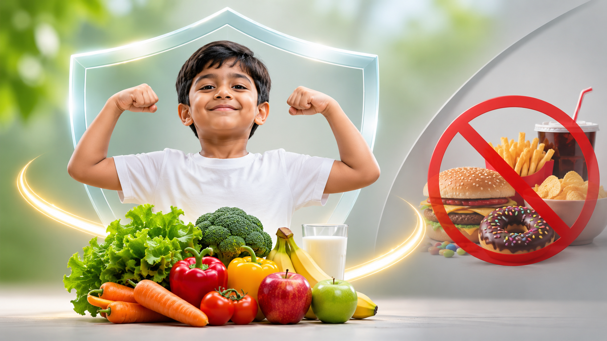
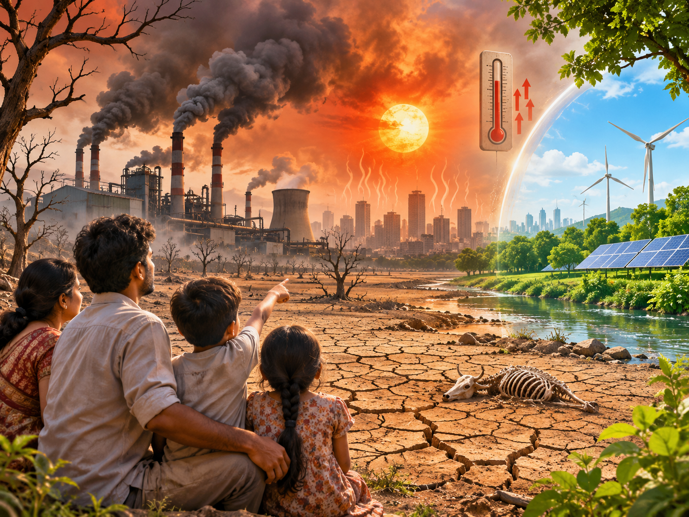
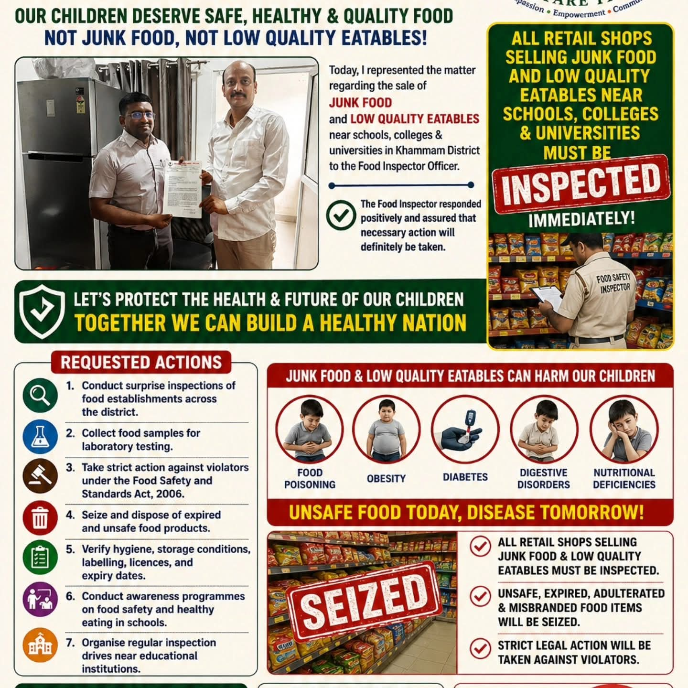
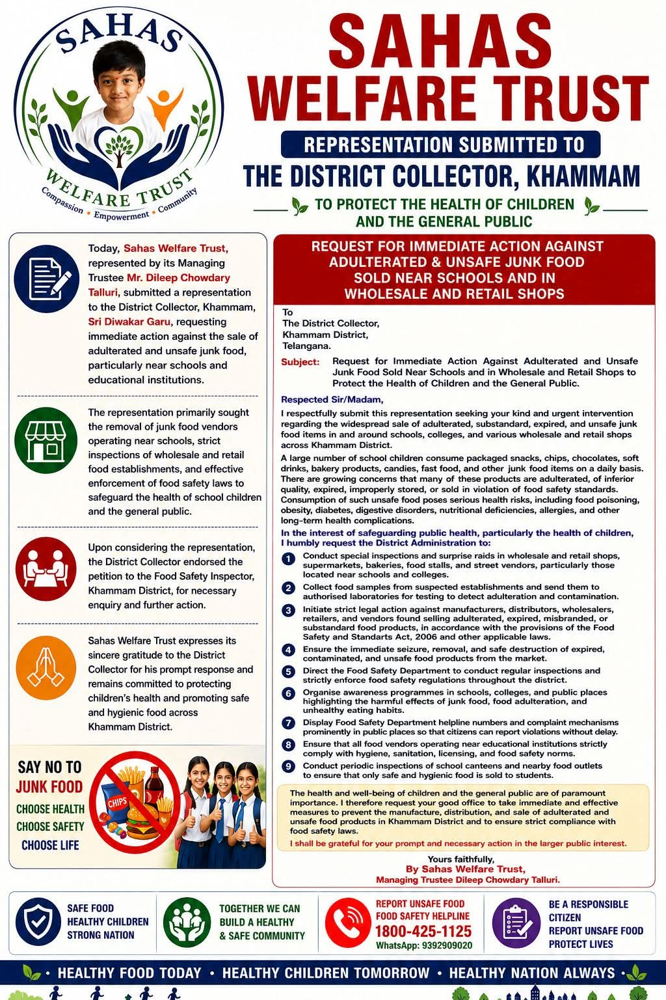
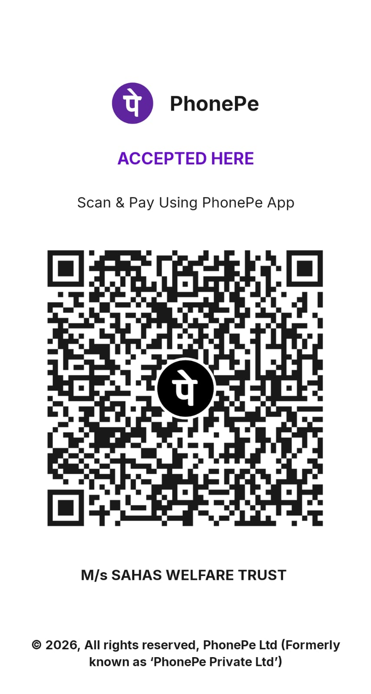
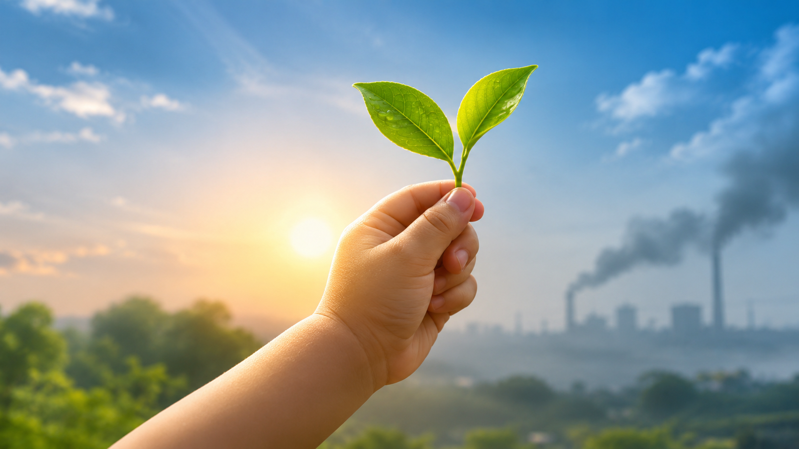

01
Food-safety advocacy
Calling attention to unsafe, expired, or low-quality food, especially near schools.
See the campaignWho we are
Every child deserves nourishing food and a planet where they can thrive.
Sahas Welfare Trust brings two causes together: protecting children through safe-food awareness and encouraging community action on global warming. Our vision is to help families, schools, and neighbours make healthier choices, care for nature, and speak up for lasting change.
See our food-safety campaignOur focus
Our food-safety work brings attention to risks children face and the practical steps communities and authorities can take.
Calling attention to unsafe, expired, or low-quality food, especially near schools.
See the campaignEncouraging safe, nutritious food choices that support children’s health and wellbeing.
See the campaignBringing public concerns forward and supporting stronger food-safety checks.
Get in touchCampaign focus described from the materials shared by Sahas Welfare Trust.

Food safety & wellbeing
Help children grow up with safe, nourishing food. Stand with Sahas for healthier choices at home, in schools, and across our communities.
Support our workOur vision for climate action
Global warming is a shared challenge. Sahas can help turn local concern into everyday action.
Our goal is to bring schools, families, volunteers, and local partners together around climate awareness and practical environmental care. Community action works alongside the wider changes needed from governments and businesses.
See how we can helpHope for a greener tomorrow
A greener tomorrow begins with what we do today. Help Sahas inspire communities to waste less, save energy, and care for nature.
Explore our action goalsWhat we aim to build with your support
Develop school and neighbourhood conversations about global warming, energy use, and responsible consumption. Invite volunteers and educators to make the ideas practical and easy to share.
Connect food awareness with meal planning and waste prevention. Encourage families to buy what they need and use what they buy, reducing the resources wasted with uneaten food.
Bring together local partners to explore native planting and care for existing green spaces. Plan permission, suitable species, watering, and ongoing care before planting.
Encourage energy saving, reuse and repair, and lower-emission travel where practical. Work towards conversations with schools and local leaders about cleaner, greener communities.
Explore everyday actions in the United Nations ActNow guide.

For the next generation
Help us connect care for children with care for the Earth. Support the mission, share an idea, or help shape a local awareness activity.
Read, learn, share
Food safety is a shared responsibility. Simple habits at home, at school, and wherever food is prepared can help reduce risks.
Wash hands, utensils, and food-preparation surfaces. Keep food protected from dirt and pests.
Keep raw foods apart from cooked and ready-to-eat foods to help prevent cross-contamination.
Cook food thoroughly, and reheat cooked food well before serving.
Keep food at safe temperatures. Do not leave cooked or perishable food out for long periods.
Use safe water and fresh, wholesome ingredients. Check food labels and expiry dates.
Food safety in action
These campaign materials show the issues Sahas Welfare Trust has raised and the food-safety actions it has requested.

Calling for safe, quality food and action on unsafe food sold near schools and colleges.

Requesting inspections, testing, and action to help protect children and the public.
Nourish a child. Nurture the Earth. Give tomorrow a chance.
Support Sahas Welfare Trust
Your support can help Sahas take its vision forward: safer food for children and stronger community awareness of climate action.
Give what you can, share the message, or offer your time and skills. We aim to build school awareness activities, encourage responsible everyday choices, and bring neighbours together around practical local action. Each act of support helps this mission move forward.

Open your PhonePe app and scan this code. Please confirm the payee name before completing your payment.

One shared future
Food, nature, and our future belong in the same conversation. Lend your voice, your time, or your support to the Sahas mission.
Be part of the changeBe part of the change
Start with one conversation, one thoughtful meal, or one green space cared for. Bring your family, school, or workplace into the effort. Together, we can turn concern into action.
Let’s connect
Have a question, an idea, or want to get involved? We’d love to hear from you.
Serving with care, wherever we’re needed.